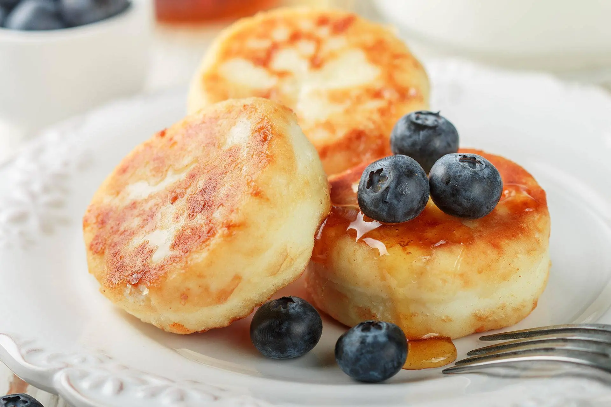

Рецепт сирників від ТМ Рудь ®

- Сир 9% -
250г350г - Яйце куряче - 2 шт
- Борошно пшеничне - 6 ст.л.
- Цукор - 2 ст.л.
-
Олія соняшникова -
Зст.л.5 ст.л.
Інгрідієнти:
До сирників можна додати сметану, згущене молоко, йогурт чи любі соуси на смак. Смачного!